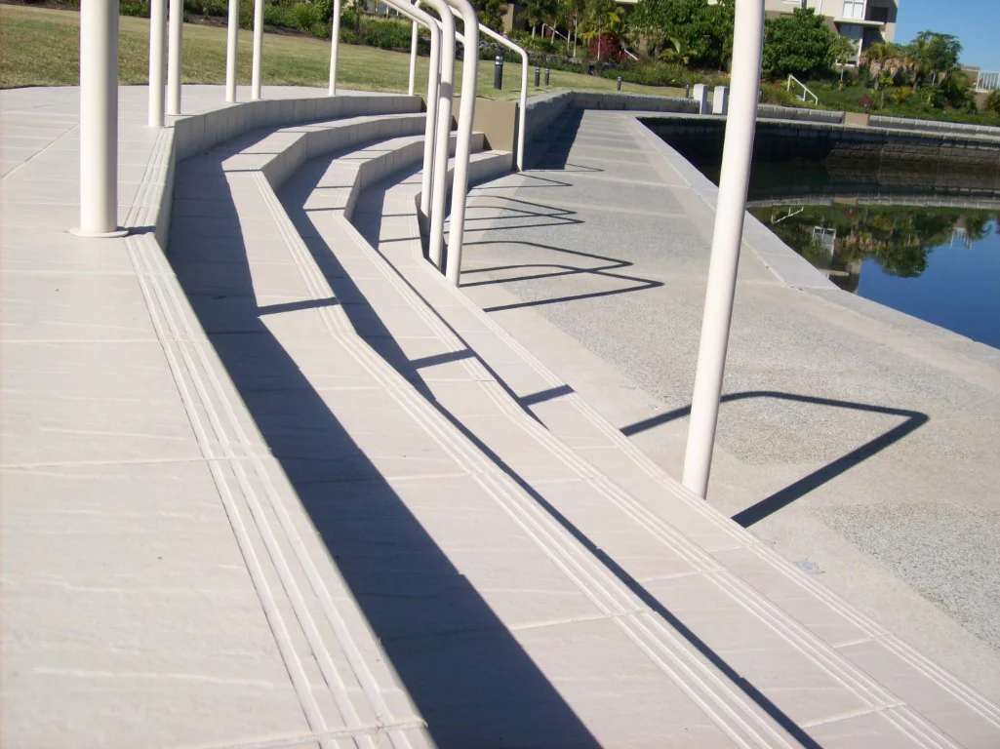

01

Half Bullnose
Our most popular profile. A simple rounded edge that is economical and quick to produce. Ideal for stair nosing, skirting and pool coping where a clean, practical finish is needed.

We machine the edge of your tile into finished profiles for pool coping, stair nosing, skirting and architectural edges.
These are the core profiles we produce most often. All can be machined from full-bodied porcelain, glazed porcelain, double-loaded ceramic and most natural stone.
Our most popular profile. A simple rounded edge that is economical and quick to produce. Ideal for stair nosing, skirting and pool coping where a clean, practical finish is needed.

A fully rounded edge that softens the tile and creates a small overhang. A good choice when you want a more substantial soft edge on pool surrounds or other exposed edges.

A clean squared profile with a bevelled edge. Suits contemporary pool surrounds and architectural work where a sharper, more defined look is preferred.

A restrained contemporary profile that softens the edge without adding bulk. Useful on steps, coping and any situation where you want the tile to look finished but not heavy.

Grooves cut directly into the tile surface to create an integrated non-slip tread. Removes the need for a separate nosing product. Available with 3, 4 or 5 grooves (6 mm width).
Beyond the standard profiles we also produce laminated edges, apron profiles, mitred joins and fully custom requirements.
Laminated edges join two pieces of tile to create a thicker, more substantial finished edge. Apron profiles give greater depth at the face. Mitred edges are machined at 45° for clean corners and junctions.
Discuss a custom requirement →
Half bullnose, full bullnose, flat edge bevel and apron profiles are regularly used on pool surrounds.
Half bullnose and step tread grooves are the most common choices for internal and external stairs.
Simple rounded or bevelled edges give a clean finished look to skirting and border tiles.
We work with tilers, tile retailers and suppliers across South East Queensland. Most common flooring tiles can be edged, including full-bodied porcelain, glazed porcelain, double-loaded ceramic and natural stone.
Turnaround is typically faster than on-site finishing, and the finished edge is consistent across the order. Quantity discounts are available for larger runs.
If you are a trade customer, send the tile type, quantity and preferred profile and we will quote accordingly.
Send the tile details, quantity and profile you need. We will come back with pricing and lead time.